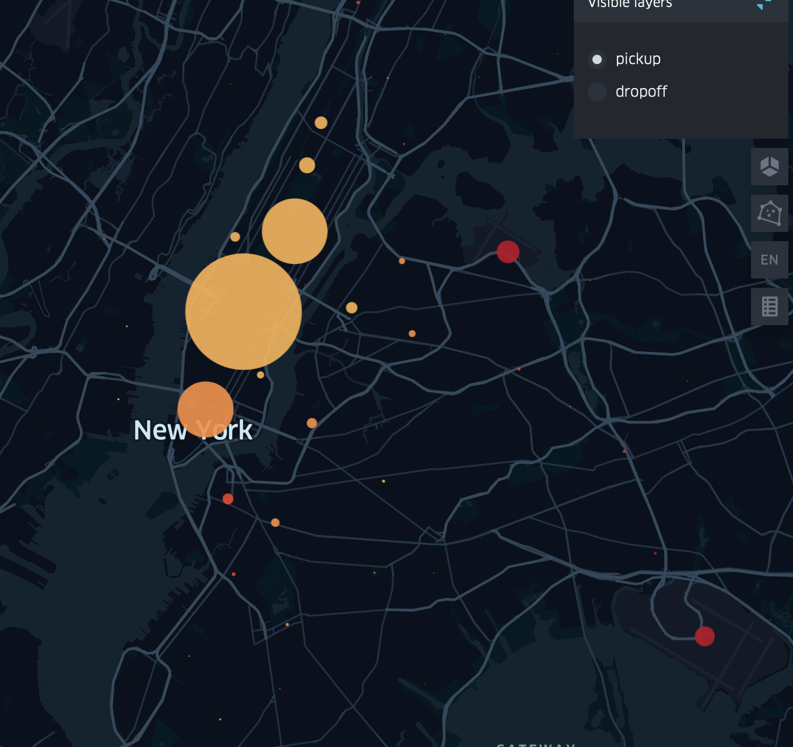
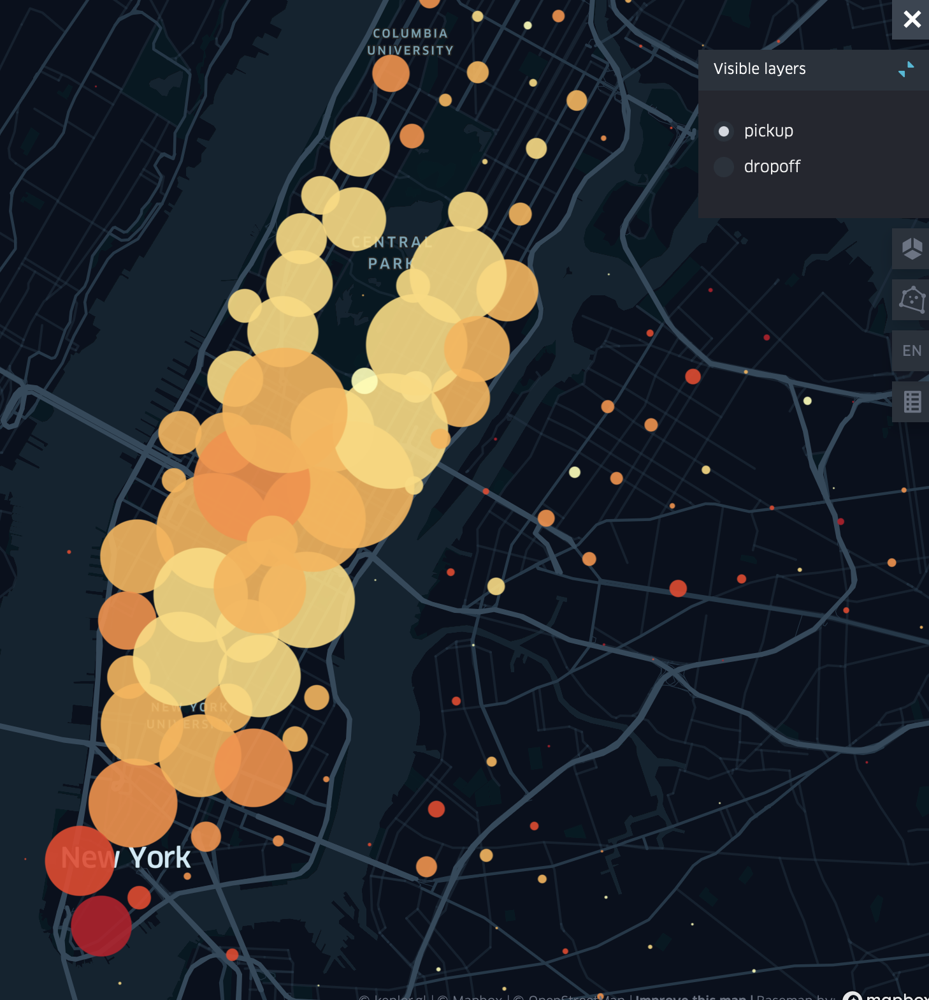
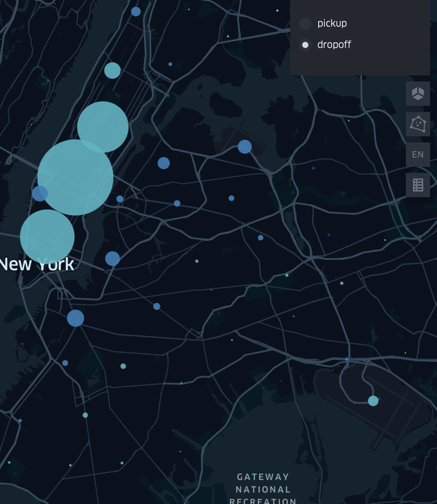
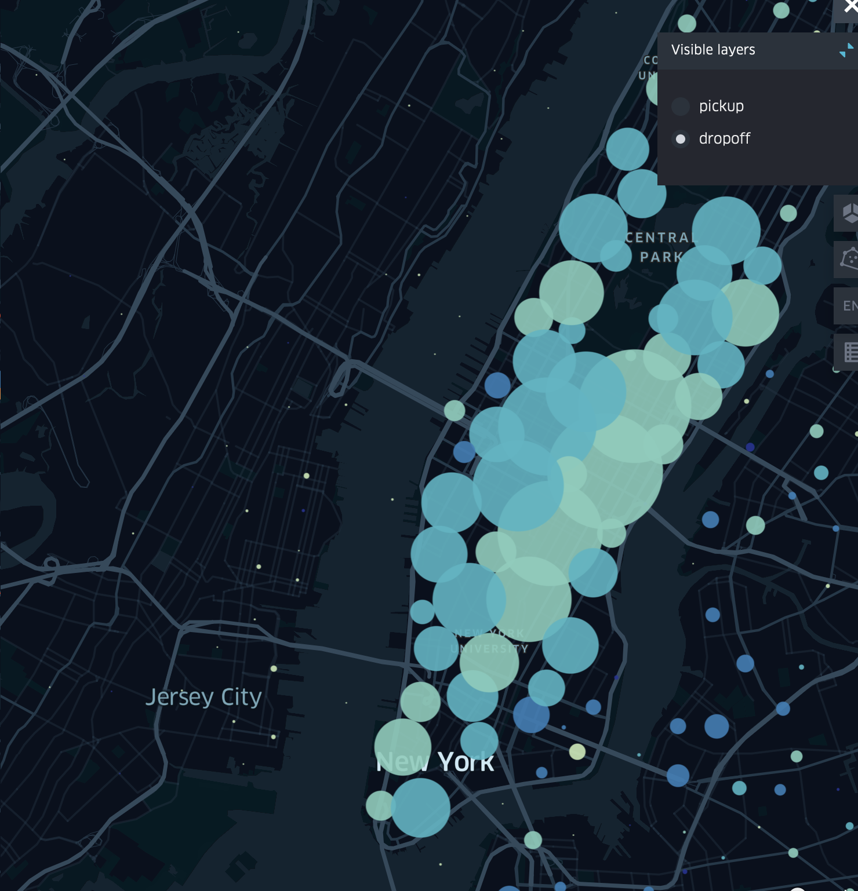

IDV TP6: Spatio-temporal visualizations: answers
Exercise 1
From the data, co-visualize on two maps the places of arrival and departure of taxi journeys using the color to represent trip distance, with an aggregation by cluster, then through a hexagonal grid in 2D+1. What do you observe?
With the color (color value), what other attributes can you visualize, giving you an additional information about the taxi trips distribution?
Answer
We see that most pickups and dropoffs are located in the center of New York. Zooming out, we can see that there are also clusters around the airports. These trips seem also to be the longest ones.
 
 
We could also visualize the passenger count using color.
Exercise 2
Using a filter and an animation, represent the evolution of the distribution of departure and arrival locations during the day What do you observe?
Answer
We see for example that early in the morning there are many pickups in the east of the city and then mostly in the city center and the airports. In the morning there also more pickups in the suburbs than in the rest of the day. Drops offs are similar, most in downtown and the airports. However, drop offs in the suburbs happen more at the evenning and night.
Exercise 3
In this second part, we will directly visualize the flows corresponding to taxi trips, with their departure and arrival points. Look in the options for a way to visualize flows using lines or arcs. Explore color options to represent flows based on where they start and end. Using a filter and an animation, observe the evolution of the distribution and direction of the flows during the day. What do you observe?
Use the brushing tools to observe the evolution of journeys made to and from JFK airport, and the neighborhoods of midtown and downtown Manhattan.
Answer
We see more origins and destinations with the flow visualization that does not aggregate the points. We see similar patterns than before: most trips happen in the city center and from/to the airports, in the morning the trips go from the suburbs to the center and the other way in the afternoon.
From downtown most trips go the airports. We see the pattenrs that we saw before, the brushing tool enables us to reduce clutter.
Exercise 4
- Create a new table that contains the stations, the dates and the coords. You can use the table trainsByStationCoords of the previous TP as an example.
- Load the table into Kepler, how is this dataset different to the NY one?
- Explore the flow spatio-temporal distribution, what do you see ?
- Using Vega, propose two complementary visualizations to depict the flow spatio-temporal distribution.
Answer
{
trainsByStationsAndDate = trainswithdate
.groupby('date', 'departure_station', 'arrival_station',)
.rollup({
total_num_trips: d => op.mean(d.total_num_trips),
num_late_at_departure: d=>op.mean(d.num_late_at_departure),
num_arriving_late: d=>op.mean(d.num_arriving_late)})
trainsByStationsAndDateCoords = trainsByStationsAndDate.
join_left(gares, ['departure_station', 'LIBELLE'])
.rename({ X_WGS84: 'X_WGS84_DEP', Y_WGS84: 'Y_WGS84_DEP'})
.select(aq.not('LIBELLE', 'DEPARTEMENT', 'CODE_DEP'))
.join_left(gares,['arrival_station', 'LIBELLE'])
.rename({ X_WGS84: 'X_WGS84_ARR', Y_WGS84: 'Y_WGS84_ARR'})
trainsByStationsAndDateCoords.objects()
}- This dataset is different because we have less departure and arrival points as all of them correspond to train stations. The result is less cluttered.
- We can see that the number of trips across times varies for multiple trips. There are also some routes that have appeared across time (or we do not have the data for before) such as the ones going and coming from Belgique.
- The limitations of using such visualization for spatio-temporal analysis is that is difficult to compare values through color. A linear graph might be more useful to study the evolution of number of trips, for example.
- Using Vega we could create the linear graphs mentioned above, and also use small multiples to depict the flow evolution across time (using an od matrix or a flow map), or the difference between some years. For now, Vega Lite does not support animation but a recent research paper proposed an extension that could resolve the problem Animated Vega Lite